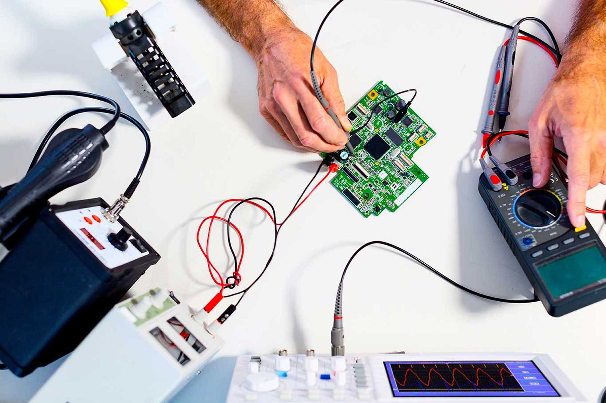
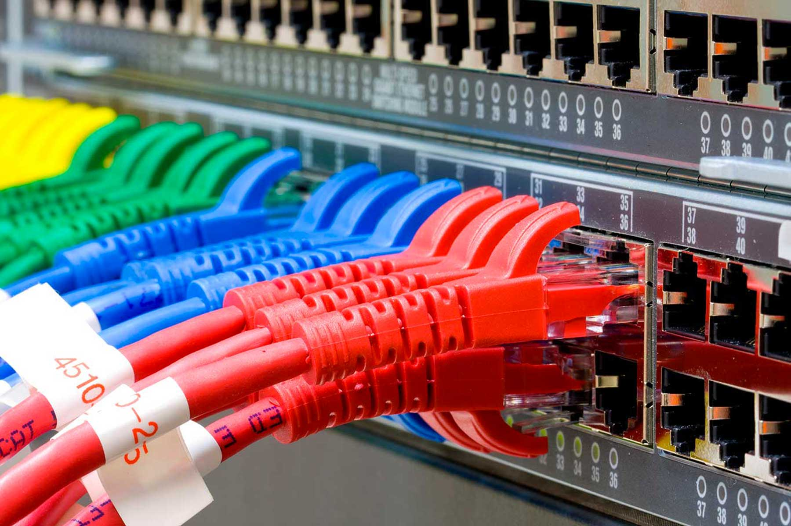

BTS Systèmes Numériques
L’objectif est de former en deux ans des techniciens supérieurs capables d’installer, configurer, exploiter, dépanner, créer ou améliorer des systèmes numériques (électroniques, informatiques et réseaux). Le BTS SN (Systèmes Numériques) propose deux options : - Informatique et Réseaux (IR) : programmation des systèmes, gestion et sécurité des réseaux informatiques - Électronique et Communication (EC) : étude des dispositifs électroniques, de la conception à l'intégration dans des systèmes informatiques et réseaux. Le titulaire de ce BTS développe et exploite des applications et des systèmes informatiques organisés ou non en réseau destinés aux procédés de production de biens d’équipement et de services techniques. Les techniciens se retrouvent majoritairement dans les fonctions d’exploitation et de support. Ils sont aussi présents dans les achats, l’installation, la maintenance et l’assistance technique. Il peut exercer dans trois types d’entreprises : les entreprises de services du numérique, les sociétés utilisatrices d’équipements automatisés et/ou informatisés et les entreprises réalisatrices de solutions dédiées et d’équipements automatisés et/ou informatisés.

Option Électronique et Communication
Spécialiste des composants complexes, le titulaire de l’option EC (Électronique et Communication) intervient sur la partie électronique des systèmes techniques quelle que soit leur technologie. Son domaine de compétences est centré sur le signal, l’acquisition, le traitement analogique, le traitement numérique et son exploitation. Il maîtrise le développement des microprocesseurs (Ardouino, RasberryPl, Microchip), les analyseurs de communication (GSM, Volp), les systèmes temps réel (CompactRIO, LabView), les outils de mesure de signaux simples et complexes. Cette formation permet d'être recruté dans des secteurs divers tels que : Responsable du service après-vente - Technicien électronicien - Technicien de maintenance en informatique - Technicien télécoms et réseaux - Intégrateur de systèmes numériques et de réseaux - Responsable du support technique - Chef d’équipe en unité de production - Assistant ingénieur (mesures, tests et contrôles).

Option Informatique et Réseau
Plus orienté vers le développement et la programmation, le titulaire de l’option IR (Informatique et Réseaux) intervient sur les installations informatiques organisées en réseaux (exploitation, maintenance, assistance technique, commercialisation). Il intervient dans la conception de logiciels ou de sites web, l’installation, la maintenance, l’exploitation et la commercialisation de systèmes informatiques. Son domaine de compétences est centré sur le développement et la programmation. Il maîtrise plusieurs langages de programmation (Java, C++, Php), les réseaux (installation, configuration), les systèmes mobiles et communicants. Cette formation permet d'être recruté dans des secteurs divers tels que : Administrateur de réseau - Développeur informatique - Informaticien industriel - Technicien de maintenance en informatique - Technicien télécoms et réseaux - Responsable du support technique.
La poursuite d'études
Possibilité de rentrer dans la vie active
Les actus de l'enseignement supérieur
L'enseignement supérieur La Salle Avignon est dynamique et toujours en projet